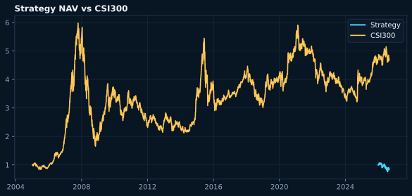
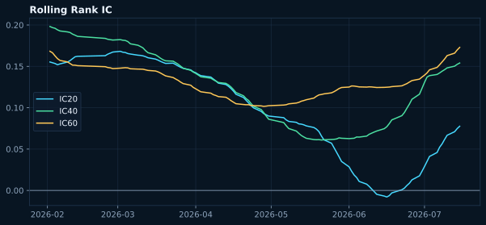
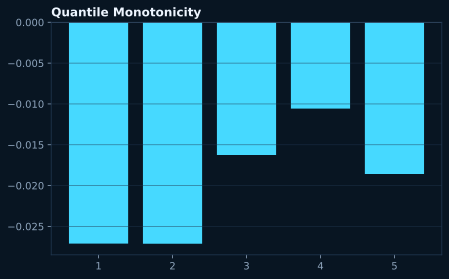

TickFlow · Pure Neural Alpha
TickFlow Neural Alpha · 周报
数据严格截止：2026-08-27
Total Return
508.87%
Sharpe
0.53
Max Drawdown
-59.50%
Calmar
0.19
Turnover
255.77
Trading Costs
4739703.34
IN-SAMPLE
DEGRADED
2005-01-04 00:00:00 — 2025-08-21 00:00:00
VALIDATION
DEGRADED
2025-11-24 00:00:00 — 2026-06-03 00:00:00
HISTORICAL OOS
DEGRADED
2009-03-03 — 2026-07-15
FORWARD SHADOW OOS
PENDING
accumulates after champion deployment



Research Audit
| Item | Value |
|---|---|
| Champion / Challenger | mlp-2026-08-27-20260827T115146Z-b6907767-degraded / 0 |
| Train / Validation / Test | 67/67 expanding folds · FULL |
| Purge / Embargo | 60 / 5 sessions |
| Mature Labels | 13,698,418 |
| Data Quality | PASS |
| PIT Status | PASS |
| Survivorship Status | DEGRADED |
| ICIR 20 / 40 / 60 | 17.60 / 20.51 / 22.14 |
| Newey-West t 20 / 40 / 60 | 25.74 / 28.80 / 30.57 |
| Yearly / Regime IC | computed only after each bucket has mature OOS labels |
| Top-K Performance | Top 30, rebalance every 5 sessions |
| Selection Universe | STOCK |
| Min Feature Coverage | 80% |
| IC Decay | 20D / 40D / 60D shown in rolling IC |